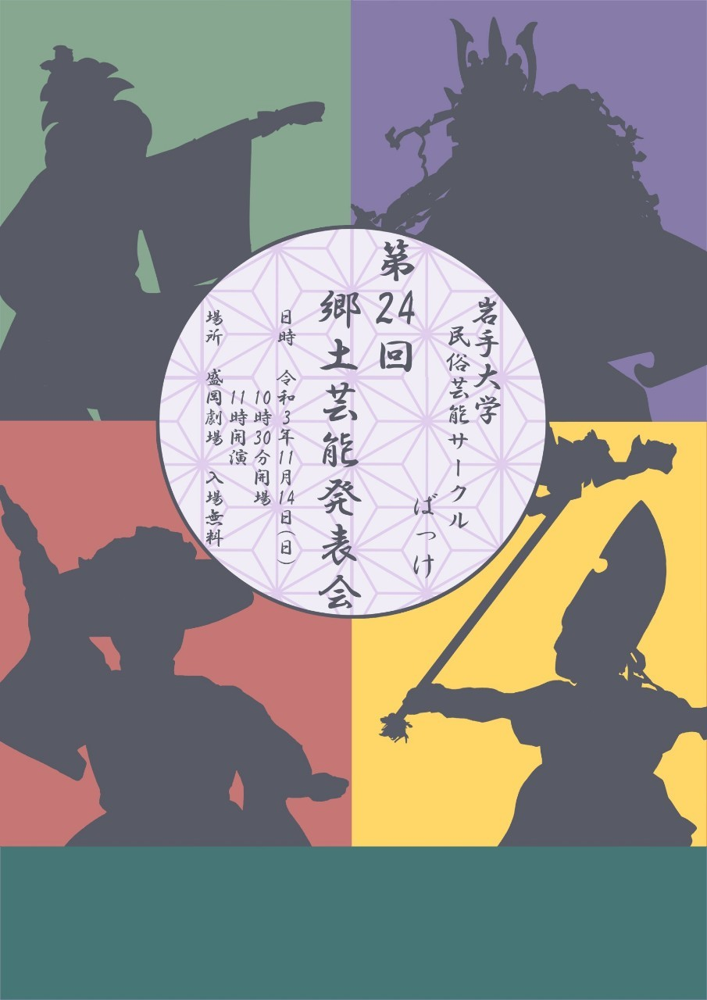

こちらのWEBサイトは、HTML5、CSS3、およびJavaScript、jQueryでコーディングしたものです。
未完成でありながら公開に踏み出しましたため、不備があるかと思いますが、ご了承ください。
また、スマートフォン対応デザインは作成中ですので、パソコンでの閲覧をお願い致します。
尚、写真をふんだんに使っております。
使用不可の写真や、もし映り込んでいた写真を見つけ、使用をやめてほしい
という要望がございましたら、Twitter、Instagramもしくは以下のメールアドレスまでメッセージをお寄せください。
bakke.iwateuni@gmail.com
s0620010@iwate-u.ac.jp
ばっけ紹介(代表挨拶)
岩手大学民俗芸能サークルばっけでは県内外7つの演目に取り組んでいます。
取り組んでいる演目の詳細については後ほどご紹介しています。
ちなみに民俗芸能とは、民間の風俗・習慣・信仰に根ざして伝承されてきた芸能のことです。
皆さんは民俗芸能についてどんなことを思うでしょうか？私たち大学生のような若い世代の中には、民俗芸能は堅苦しくて難しいものだと思う方が多いかもしれません。
もちろん、伝統を引き継ぐ責任はありますが、それ以上に踊ることの楽しさや仲間と共に作りあげる喜びを得られる素晴らしいものだと思っています。
そんな民俗芸能の素晴らしさや楽しさを、私たちの活動を通してより多くの若者に伝え、そして人々と民俗芸能の架け橋となれるよう、民俗芸能サークルばっけは日々の練習に取り組んでいます。
若者が民俗芸能に感じる敷居の高さを少しでも解消できれば幸いです。 第25代 代表 伊藤千穂
あなたも私たちと一緒に民俗芸能に取り組んでみませんか？身構える必要はありません！部員の多くは民俗芸能未経験者なのでスタートラインは同じです。
ぜひ気軽に体験しに来てくださいね！部員一同、お待ちしております！
単独公演
毎年開催
ばっけ 単独公演ポスター
沿革
● 創設年
平成９年 結成
● 年間の活動内容
10月
大学祭「不来方祭」にてステージ発表
11月
単独公演(郷土芸能発表会)
その他、外部からの依頼があれば随時対応。
● 通常の活動
週３回の定期練習に加え、各演目それぞれの保存会の練習に参加。
●過去の活動
平成28年
平成29年
平成30年
令和元年
令和2年
ばっけに興味がある方
ガンダイニングという岩手大学の公式YouTubeチャンネルの番組に紹介をしていただきました。
以下の動画は、その様子と、毎年開催している単独公演を撮影し、
ばっけのYouTubeチャンネルにアップロードしたものです。
普段の活動の様子をもっと知りたい方は、各種SNS（Twitter、Instagram、YouTube）
もチェックしてみてください。
ガンダイニング
郷土芸能発表会
演目紹介
演目紹介用のサイトで詳しく紹介しております。

県外演目
北海道民謡「ソーラン節」
宮城県石巻市「寺崎はねこ踊り」
熊本県民謡「おてもやん」
活動日程
-
見学・体験会
日時：年中参加可能
場所：多目的棟
公式SNSやや知り合いのばっけ部員を通して連絡ください！！
きてね！！ -
サークルオリエンテーション
日時：毎年5月の大学のイベントにて
場所：岩手大学(学生センターA棟)
きてね！！ -
さんさ合宿
日時：毎年5月
場所：岩手山青少年交流の家(テンパーク)
さんさ練習＆レクリエーション -
郷土芸能発表会(単独公演)
※入場制限
・岩手大学の学生及び学内関係者
・ばっけOB,OGの先輩方
・ばっけ部員のご家族
・各演目の保存会の皆さま
・案内状をお送りさせていただく方々
上記いずれかに該当す方にのみ、事前予約をしていただいたうえで入場可能とさせていただきます。
ご予約はこちらから https://t.co/UfQaHMDMeH?s=06
日時：2022年11月6日(日)
10:00 開場
10:30 公演開始
場所：河南公民館（盛岡劇場）
月ごとのイベント
4月
5月
6月
7月
8月
9月
10月
11月
12月
1月
2月
3月
保存会
伝統芸能・民俗芸能の継承に尽力する「保存会」という団体があります。私たち岩手大学民俗芸能サークルばっけは、
各演目ごとに存在する保存会へ参加させていただき、普段の練習で分からない部分や間違っている部分を教えていただく他、
公演や奉納等の前には、完成度を高めるためのご指導をしていただいております。
奥州、岩泉、寺崎など遠い場合には、長期休業に合宿という形で指導をしていただいています。
私たちが民俗芸能の活動を出来るのは保存会様のおかげです。大変感謝しておりまます。
-

三本柳さんさ踊り保存会
岩手県盛岡市三本柳地区
さんさ踊り発祥の地と云われている盛岡市名須川町三ツ石神社（東顕寺が管理寺）に由来する。 藩政中期文化文政（1804）のころ、時の藩公（南部利敬）より33種の踊りの伝承を託した一巻の巻物を伝授、 以来約200年間三本柳の有志で構成した踊り連中により、踊り継がれて今日に至る。 踊りの伝承形態は「踊り連中」によるもので、当初より依頼行事、門付けを主とした組織で、 踊りの伝授は相当厳しいものがあったといわれている。 現在、明治17年頃までの踊り連中の名簿、写真が判明しているが、明治の頃に近隣の村々から指導を乞うわれ教えたといわれている。
参考文献：三本柳さんさ踊り保存会公式ホームページhttp://yanagitusin.web.fc2.com/ -

澤目獅子踊り保存会
岩手県盛岡市手代森
澤目獅子踊りは,堂前に伝承されている巻物において、正徳5 年（1715 年）の記述があることから、 少なくともそれ以前から、盛岡市手代森の沢目地区に、およそ三百年にわたり伝えられている。 伝承されている巻物には獅子踊りの歌詞を訳した『和合宇多覚』のほか、 天台宗、真言宗の流れを汲む仏像各種の図解が併記されており、精霊を供養し、悪霊を追い払うものとして、 古くから舞を回向踊りとして伝承している。踊りは幕踊り系に属し、 「回向」「庭ならし」から始まり、「七拍子」「雌獅子狂い」などの役踊り「礼踊り」まで 四十八段落に舞が区切られており、腰を低くした踊りが特徴で、 力強い太鼓の響きや流れる笛の音とともに獅子らが勇壮に舞う。
また、後継者育成においては、次代を担う青少年が伝統芸能を介して地域への関心を高め、 伝承活動が地域社会とのつながりを深める交流の場となるよう取り組む。 -

中里七ツ舞保存会
岩手県岩泉町中里地区
下閉伊郡地方に古くから伝承していた黒森神楽（山伏神楽）で、家々に舞い込む先払いの芸能から風流化した。 岩手県岩泉町の中里地区に伝わる、五穀豊穣・家内安全・大漁を祈る勇壮活発な踊りで、天照大御神が天から降りくる際の道案内を表す。
天保年間から昭和15年頃まで約100年ほど踊り継がれた。 一度衰退時代が続いたが、昭和63年に復活を遂げ、以来地元の小・中・高等学校の学生を中心に保存伝承に取り組み、今日に至る。
岩手大学民俗芸能サークルばっけでは、16年にわたり踊りついでいる。 -

大森神楽保存会
岩手県奥州市衣川
大森神楽は、１９７０年（昭和４５年）７月、当時の衣川村立衣川小学校大森分校教諭佐々木久雄（直木賞作家（故）三好京三）氏と 当時村の教育長で大原神楽の師匠（故）小坂盛雄氏が中心となり、分校の児童に神楽を伝授したのが始まり。 その後学校教育とかかわり合いながら活動し、児童全員に踊り伝えられてきた。 １９９８年（平成１０年）３月に大森分校が閉校となり、保存会として再スタート。 一関市山谷から伝わる三輪流の流れを継承し、南部神楽の一団体として活動している。
参考文献：大森御神楽保存会公式ホームページhttp://oomorikagura.web.fc2.com/index.html -

寺崎はねこ踊り保存会
宮城県石巻市桃生町寺崎
起源は江戸時代、うち続く凶作に苦しめられた人々が、ある年の豊作に恵まれ、 思い思いの格好をして、喜び、踊り回ったのがはねこ踊りの始まりと言われている。 その後、所作が整えられ全国でも類のない「豊年踊り」として現在の姿が完成した。 はねこ踊りの一番の魅力は「皆が喜んでくれること」。 リズム良く体に響く太鼓や、抑揚のある笛の音は人々の心を弾ませ、扇の日の丸を見え隠れさせながら踊る、 色彩鮮やかな衣装を着た踊り手の姿は、見る人皆を笑顔にする。
ばっけの単独公演では、フィナーレとしても大切に踊られている。
参考文献
石巻市HP,「はねこ踊りの由来」https://www.city.ishinomaki.lg.jp/cont/10240000/5500/5500.html
宮城県HP,「指定文化財〈県指定無形民俗文化財〉寺崎のはねこ踊」https://www.pref.miyagi.jp/soshiki/bunkazai/33terasakihaneko.html
アクセス
活動場所：多目的棟(同袍寮,自啓寮の間の建物)
活動日時：火曜日(17時～)、水曜日(17時～)、日曜日(13時～)
サークル体験期間中はチラシやSNSで中央食堂などへの集合を呼び掛けて、部員が案内します‼
賑やかなお囃子の音が聞こえたらそれがばっけです!!